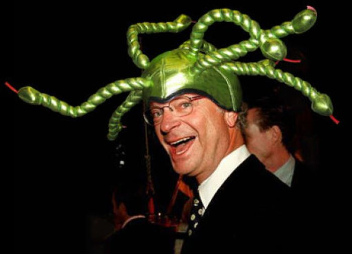

Carl XVI Gustaf, King of Sweden, is known not just for his long reign, but also for his quirky collection of hats. From military headgear to extravagant ceremonial pieces, his fondness for unusual and sometimes amusing hats has made him a charming figure in the public eye. These hats have become a playful part of his royal image, adding a touch of humor to his stately presence.
Want more pictures?